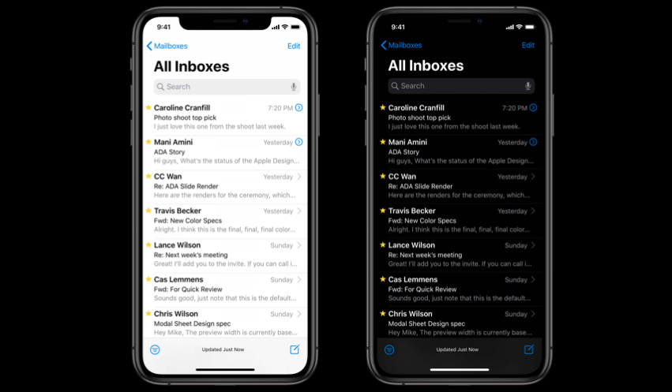
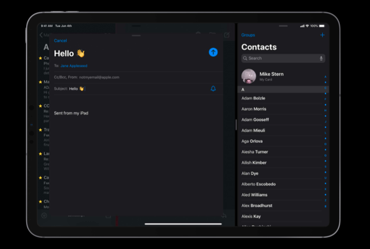
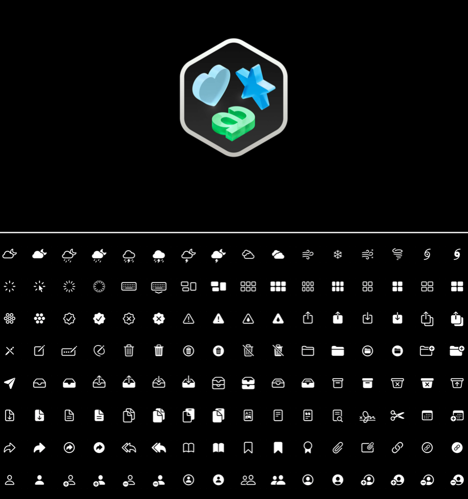
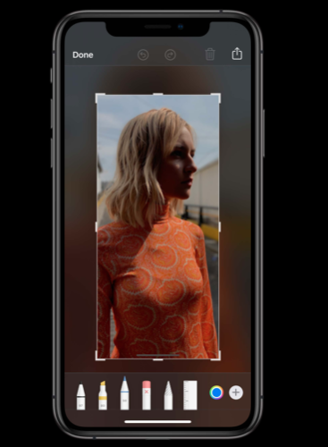

从 iOS 13 系统开始，用户可以像在 macOS 中一样开启全局的「Dark Mode 深色模式」，聚焦于内容本身。这对 app 在设计时提出了挑战。为了让用户在 app 中使用时更有空间感，iOS 13 强化了「Modal Presentation 模态展示」页面的样式。3D Touch 让使用支持此功能的硬件的用户可以快捷访问某些功能、预览某些页面，「Context Menu 情景化菜单」把这项功能带给了所有用户。
目录
Dark Mode 深色模式
在 iOS 13 及之后的系统中，人们可以选择采用一个全局的深色系统外观——称为「Dark Mode 深色模式」。在深色模式中，系统中的所有屏幕、界面、菜单、控件都使用了更深的颜色，这让在更深背景中的前景内容更容易显现出来。注意深色模式仍然支持所有的辅助功能设置。
人们可以选择深色模式作为他们的默认界面样式，他们也可以通过设置设定周围灯光变暗时自动开启深色模式。
因此深色模式带来了一个与颜色、图片、文本打交道的新界面方案。
深色的 UI 更适合灯光条件较暗的情况，对于我们的眼睛来说，在一个暗色的屏幕和周围的世界之间做出调整也更加容易。抛开功能性去说，许多人只是喜欢把使用暗色的界面作为自己的个人偏好。
iOS 的 Dark Mode 使用了几乎全黑的背景以提供与文本和其他前景元素的最大对比度。黑色的背景会使 UI 与硬件本身看上去融为一体。
通常情况下，你的 app 都应该支持 Dark Mode 功能。当人们使用 iPhone 切换到 Dark Mode 时，他们期望你的 app 也一起改变。

核心设计目标
- 保持熟悉：iOS 设计系统会经历一个从头到尾的更新，但是结果还是人们熟悉的那个 iOS 系统；
- 平台一致性：所有的内置 app 在 iOS 13 中都被重新设计过，它们的组成部分都保持着平台的一致性；
- 清晰的信息层级：通过颜色区分信息层级，让重要的信息更加显眼，不重要的信息隐藏在背后；
- 可访问：把辅助功能与其他目标放在同等地位，新的系统同样支持粗体文本、增强对比度、减少透明度等辅助功能模式；
- 保持简洁：让新的设计系统保持简洁、直接、易于操作执行。
Color 颜色
每一个 app 都有一个背景，大多数 app 会包含文字、图形。有的还会包含分隔线、分组以帮助组织内容。在以前当我们描述这些的颜色时，可以直接说它们的色值是多少，比如文本是黑色，背景是白色等等。但当 app 有了另一套外观时，就出现了两套对应相同元素的不同颜色体系。
此时，对颜色需要有一个更抽象的方式来描述，那就是「semantic colors 语义化颜色」。
「语义化颜色」描述了一个颜色的目的而不是颜色的值。所以对于「背景颜色」来说，在亮色模式下是白色，在深色模式下就是黑色。你需要对 UI 元素匹配语义化颜色，以使得外观可以自动在亮色和深色模式之间切换。
大多数的颜色会分为四个等级：一级、二级、三级、四级。这些变种用来表现不同的信息层级。
Label 文字标签应该与背景有着最强的对比度，是需要用户注意的地方，所以对于标题使用一级，副标题使用二级，占位文本使用三级，不可用文本使用四级。
同样的，对于背景颜色也是这样。系统背景是一级，二级和三级的背景颜色可以让你在视觉上构建信息层级。
对于成组的 table view 来说也有特定的视差背景效果。Table view 的背景是一级，每一行的背景是二级。仔细观察，相比于亮色模式，深色模式不是简单地将颜色进行翻转。

新的系统色盘还包括「fill color 填充颜色」和「separator color 分隔线颜色」。所有的填充颜色和其中一个分隔线颜色都是半透明的。这对增强与多变的背景颜色的对比度有所帮助。
新的色盘还包括了六种完全不透明的灰色值。当透明会导致出现问题时，可以使用这些灰色值。例如在绘制横纵相见的分割线时。
同样地，在色盘中，对于「tint color 着色」在亮色模式和深色模式中也有不同的变种。针对增强对比度模式，也有更进一步的变种。开启增强对比度功能后，对于一个颜色，在亮色模式中应该更暗，在深色模式中应该更亮。
当你自己设置自定义的颜色时，要注意在两种模式中颜色的显示都应该合适，必要时应该使用颜色对比度计算器，对比度至少达到 4.5：1，对于更小的文本需要达到 7：1。更强的颜色对比度可以帮助改善 app 的可访问性和可用性。不同模式下的颜色可以在保证最小对比度的情况下保持相似。
当两个界面叠在一起时，我们需要建立视觉上的层级。比如两个白色背景的界面叠在一起的时候，两个界面之间会通过阴影来表现出两个界面间的关系。但到了深色模式下的黑色背景，这个方法就不太管用了。此时，需要对背景中的那个界面使用更深的背景，对于前景中的界面使用较浅的背景。
以「通讯录」应用举例，当有一个模态窗口展示在原来的界面上时，通讯录的界面相比之前会更浅。
继续看一个更复杂的例子，在 iPad 上的「邮箱」应用的界面上 slide over 一个「通讯录」应用。「通讯录」应用的背景颜色会比背景中的「邮箱」应用更浅，以使其更显眼。
当「邮箱」应用和「通讯录」应用以 side view 的方式并排展示时，它们两个应用的背景颜色都变得更浅了。这可以与两个 app 间的分隔线形成对比，也避免了两个 app 的背景色融在了一起，看上去像一个 app。
再进一步，在上面的情况下，在「邮箱」应用中写一封新邮件会弹出一个模态窗口。新的窗口的背景颜色与旁边的「通讯录」应用一个层级，而背景中的「邮箱」主应用看上去变得更暗了一些。这是因为模态窗口绘制了一层遮罩覆盖在了上面。

以上，为了保持对视觉层级的呈现，需要在深色模式的设计中特别注意背景颜色的变化（可借助前面提到的「fill colors」和「separator colors」，并确保有合适的对比度。
如果你必须在深色模式中使用白色的背景颜色，可以选择一个稍暗淡的白色，以此避免白色背景与周围的暗色内容相冲撞。
Materials 材料
在 iOS 13 中引入了四种不停厚度的材料：厚、普通（默认）、薄、超薄，并且针对亮色和深色模式有不同的变种。
如果需要建立与背景明确的对比度，可以使用更厚的材料；对于一些更轻量化的交互，可以使用更薄的材料。使用何种材料完全取决于你要展示的内容。
对于不同的材料类型，系统也对文本标签、填充和分隔线的颜色进行了定义。「Vibrancy 虚化透明效果」是贯彻 Apple 所有系统的一个视觉效果，使用系统材料，建议最好使用动态调整颜色而不是固定的颜色。因为随着背景的各种变化，使用固定颜色可能会造成一些可读性的问题，而动态调整可以在背景颜色变化的情况下保持良好的对比度。
Controls and bar 控件和栏
iOS 13 UIKit 中的所有控件已经更新，针对于亮色和深色模式有着不同的变种。所有的控件都使用了语义化颜色重新绘制。不要对这些已有的控件尝试重新创造，不要重复造轮子。
在创造自定义控件时，针对于亮色和深色模式的不同颜色使用系统色盘。

导航栏也被进行了更新。默认情况下，大标题导航栏没有背景和阴影，这可以使标题和下面的内容融为一体。当内容滚动时，导航栏的背景和阴影才会出现。
非大标题的导航栏在某些情况下也可以使用这种效果。例如在 iPad 上的「设置」app，master view 和 split view 中的导航栏都没有背景和阴影。
但这种样式并不是总是合适的。以下两种情况还是更适合以前的导航栏样式：
* 元素会出现在透明的导航栏后面时；
* 需要视觉分隔时。
SF Symbols
以前，iOS 系统提供了一些常用的「symbol 符号」用于表示 table view 每一行和工具栏上的图标。但现在有了深色模式，一些符号就会看上去不是很合适，显得有些单薄。
设计团队重新设计了所有的符号，并且整合成了包含 1500 多个符号的「SF Symbols」。这不仅仅是一些图标的合集，而且这代表了一种思考、设计图标的新的方式。

SF Symbols 可以与 Apple 的系统字体 San Francisco 的设计特征相匹配。它们可以被展示到一行文本中，SF Symbols 中插入了基线以确保能与文字有合适的对齐关系。每一个 SF Symbol 在一个字号下提供了小、中等、大三种大小变种以适配不同的情景 。
并且每一个 SF Symbol 也像 SF 字体一样提供了九种字重，因此在粗体文本的辅助功能开启时可以变得更粗。因为 SF Symbols 是矢量的，所以可以跟随文本在动态类型中发生变化。
要在实际的设计中使用 SF Symbols，只需要在 SF Symbols app 中浏览或搜索你想要的符号，将其复制粘贴到你的设计中即可。
如果 app 中没有你想要的符号，你可以通过模板创造一个格式为 svg 的自定义的符号，之后就可以获得 SF Symbols 所提供的所有功能。
有关于 SF Symbols 的更多细节和使用方法请阅读「在设计和开发时使用 SF Symbols」。
Modal Presentations 模态展示
新的卡片样式的表单不仅通过一种不同的方式呈现了「Modal Prensentations 模态展示」，而且改变了我们与这些控件交互的方式。
模态展示通常被称为「sheets 薄片」，因为它是从屏幕底部划入屏幕中的。这个进场动画告诉人们他们从一个模式转换到了另一个新的模式或者说进入了 app 的一个新的模态。在 iOS 13 中，模态窗口有了一个在全系统使用的新的像卡片样子的外观。模态展示的好处是可以让用户看到背景中还有其他内容待确认或者待完成。如果是一个全屏的模态窗口，你可能就会忘记你之前在做什么。
模态窗口可以通过在卡片的导航栏上向下滑动来关闭。不可滚动的卡片样式的模态窗口可以通过在任意位置向下滑动来关闭，这比点击导航栏上的一个按钮来得更容易操作，而且这种单指就能完成的操作也对大屏手机有利。可滚动的模态窗口向上滚动到顶端，若继续向上滚动则可以关闭模态窗口。
如果你的 app 的某个交互与这个关闭交互发生了冲突，那这个关闭操作就会不起作用。当模态窗口包含一个强制性的操作请求时，那关闭模态窗口的交互也会不起作用。例如在关闭一个正在写邮件的模态窗口时，为了防止用户误操作而丢失内容，界面会显示一个 Action Sheet 让用户选择是否要保存草稿。
有了关闭的手势并不代表不需要可以执行关闭操作的按钮。关闭按钮对于让用户知道这个页面可以关闭十分重要，对于可访问性也非常有帮助。况且人们可能并不熟悉关闭窗口的手势操作。而且当一个内容区域被向下滚动时，一个关闭操作的按钮也更加方便。
虽然卡片形式的模态展示非常方便，遍布整个 iOS 系统，但是并不代表这个交互总是合适的。对于一些任务，像编辑图片、标记截图界面，你更需要最大化屏幕操作空间，减少让用户分心的视觉元素。对于这种情况，你应该使用全屏的模态展示。

特别注意，模态是指的是模式之前的切换。不要因为喜欢这个交互的动效或者视觉样式而去使用它。例如在日历中，当浏览日历时你可以查看日历的所有事项，选中某个事项查看详情。因为我们一直处于浏览模式，一个子视图更加适合展示事项详情。一个子视图就是父视图的延伸，其代表任务或者工作流的继续。当创建或编辑一个事项时，一个模态窗口表示进入了一个新的工作流。

Contextual Menus 情景化菜单
新的「Contextual Menus 情景化菜单」控件使快速获取情景相关的功能更加简单。

通过 3D Touch 引入了一个新的一个新的交互「Peek」和「Pop」。这对于预览内容很有用，如果有相关的操作可以通过上划显示并选择相应的操作。情景化菜单在这基础上进行了转化，将重点放在了操作上。与内容相关的操作可以立马呈现出来。
情景化菜单可以在所有的设备上起作用，而 peek 和 pop 操作只在具备 3D Touch 功能的设备上起作用。展示情景化菜单的手势是通过长按，而在具备 3D Touch 功能的设备上操作更简单，只需用力按。情景化菜单可以分为两部分，一部分是可以被执行的操作，另一部分是可选的，用于显示所选内容的预览。
情景化菜单的样式取决于设备的屏幕尺寸和方向。在 iPhone 上情景化菜单的预览和命令操作竖直排列，在 iPad 上当命令操作小于等于三个时，也是竖直排列，而其他情况则是左右排列。
情景化菜单会出现在被触发内容的最近之处，应该把用户常用的操作放在上面。并且对于相关的操作应该作为一组，对于不同的组可以使用分隔线进行视觉区分。情景化菜单也可以是有层级的，某些操作可以有二级操作。情景化菜单也包括一个图标帮助用户快速找到想要的操作，并使用红色文本标签提醒用户这是一个破坏性的操作。就像 macOS 的情景化菜单（右键菜单）一样，你应该尽可能地让 app 的每一个对象都有情景化菜单。
情景化菜单中的操作也应该在 app 中的其他位置找到并可用。因为人们可能并不一定能及时发现相关的情景化菜单。
参考链接
- What’s New in iOS Design - WWDC 2019 - Videos - Apple Developer
- Dark Mode - Visual Design - iOS - Human Interface Guidelines - Apple Developer
- Color - Visual Design - iOS - Human Interface Guidelines - Apple Developer
- Materials - Visual Design - iOS - Human Interface Guidelines - Apple Developer
- SF Symbols - SF Symbols - Human Interface Guidelines - Apple Developer
- Navigation Bars - Bars - iOS - Human Interface Guidelines - Apple Developer
- Modality - App Architecture - iOS - Human Interface Guidelines - Apple Developer
- Context Menus - Controls - iOS - Human Interface Guidelines - Apple Developer
如果你觉得这篇文章对你有所帮助，欢迎请我喝杯咖啡，感谢你的支持😁